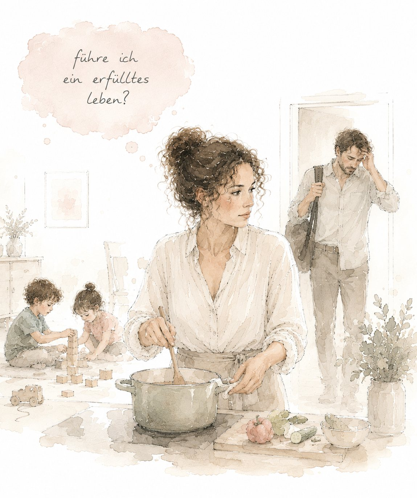

Wenn du dich selbst aus den Augen verloren hast

Wenn du funktionierst und keiner merkt, wie leer das ist.
Wenn du nicht mehr sagen könntest, was du eigentlich willst.
Wenn von außen alles stimmt – und sich innen trotzdem etwas leer anfühlt.
Solche Gedanken verschwinden nicht, wenn du sie ignorierst. Du musst sie aber auch nicht allein sortieren.
Für Frauen und Männer ab etwa 35, bei denen von außen alles stimmt: Familie, Arbeit, ein Leben, das läuft. Und innen die Frage, wo man selbst dabei geblieben ist.
Kaum jemand entscheidet sich bewusst für ein Leben, das sich fremd anfühlt. Man wächst hinein.
Tippe den an, der dir am bekanntesten vorkommt.
Nichts davon wird gespeichert oder übertragen. Das hier bleibt zwischen dir und deinem Bildschirm.
Solche Sätze lösen sich nicht durch Nachdenken auf. Aus ihnen sind über Jahre Muster geworden, die heute noch laufen – und mit ihnen die Altlasten: Schuldgefühle, Selbstzweifel, eine Unruhe, die nicht weggeht. Sie zu sehen ist der erste Schritt. Sie zu verstehen der zweite.
Manchmal zeigt sich das erst, wenn es in der Beziehung kracht: Ihr redet nur noch über Organisatorisches, einer zieht sich zurück, oder es steht der Verdacht im Raum, dass da jemand anderes ist. Auch das gehört hierher.
Kleiner Selbstcheck
Drei kurze Selbstchecks: Wie gehst du mit dir um, wenn etwas schiefgeht? Welche Muster laufen bei dir mit? Und wie steht es zwischen euch? Such dir aus, was dich gerade beschäftigt.
3 Checksje 2 Minutennichts wird gespeichert
Zu den SelbstchecksBevor du wissen musst, wer ich bin, solltest du wissen, was du bekommst.
Drei Schritte. Du steigst dort ein, wo du gerade stehst.
Alles beginnt mit dem kostenfreien Erstgespräch. Erst danach entscheidest du.
Was viele wissen möchten, bevor sie sich melden.
Nein. [Platzhalter – Sandra formuliert die Abgrenzung selbst. Wichtig auch rechtlich: klar sagen, was das Angebot nicht ist. Coaching behandelt keine Krankheiten und ersetzt keine Psychotherapie.]
Wenn es dir sehr schlecht geht, wenn du seit Längerem nicht mehr schlafen oder arbeiten kannst oder wenn du Gedanken hast, dir etwas anzutun, dann brauchst du keine Begleitung, sondern Behandlung. Sag mir das ruhig – ich sage dir dann offen, dass ich nicht die Richtige bin.
[Platzhalter – hier gehören konkrete Anlaufstellen hin. Bitte selbst heraussuchen und prüfen, damit die Angaben stimmen.]
[Platzhalter – Preise eintragen.]
Nein. Nach dem Erstgespräch entscheidest du in Ruhe. Und wenn du merkst, dass es doch nicht passt, kannst du jederzeit aufhören.
Ja. Viele kommen, weil zwischen ihnen und ihrem Partner etwas nicht mehr stimmt – manchmal steht auch der Verdacht einer Affäre im Raum, manchmal hat sich jemand neu verliebt. Wichtig ist der Unterschied: Ich arbeite mit dir, nicht mit euch beiden. Das ist keine Paartherapie. Oft ist genau das der richtige Anfang – weil du nur bei dir selbst etwas verändern kannst. [Platzhalter – Sandra ergänzt, wie sie damit umgeht.]
Nein. Das Gefühl, nur noch zu funktionieren und den eigenen Wert aus den Augen verloren zu haben, kennen Männer genauso – sie sprechen nur seltener darüber. [Platzhalter – Sandra ergänzt aus ihrer Erfahrung.]
Ja, per Video oder Telefon. Die Arbeit funktioniert genauso gut – viele finden es zu Hause sogar leichter.
Ja. Was du erzählst, bleibt bei mir. [Platzhalter – Sandra ergänzt hier, wie sie mit Aufzeichnungen und Notizen umgeht.]
[Platzhalter – Sandras Text in Ich-Form: warum sie das macht, was sie selbst gelernt hat, wie sie arbeitet. Zwei bis drei Absätze. Dieser Abschnitt entscheidet über Vertrauen.]
[Platzhalter – Ausbildung, Qualifikationen, Zugehörigkeiten. Nur eintragen, was tatsächlich vorliegt.]
Such dir einen Termin aus. Kein Formular, kein Anruf, keine Verpflichtung.
Ein ruhiges Kennenlernen, unverbindlich, per Video oder Telefon.
Dann schreib mir einfach, was los ist. Ein Satz reicht.
Du bekommst eine persönliche Antwort von mir – keine automatische Mail, kein Newsletter. Was mit deinen Angaben passiert, steht in der Datenschutzerklärung. [Platzhalter: Der Knopf ist im Entwurf noch ohne Funktion.]